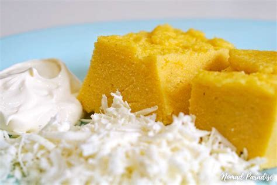
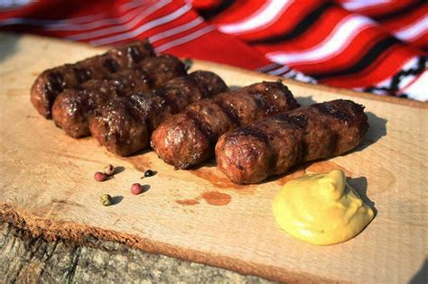
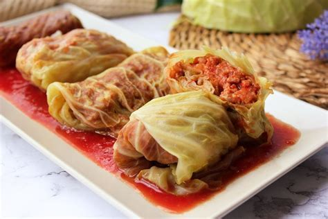
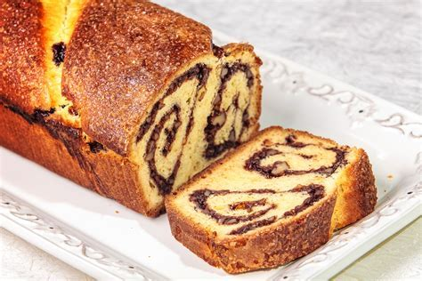

Mamaliga
Mămăligă is a classic Romanian dish made from cornmeal, similar to polenta. Simple yet versatile, it's cooked to a creamy consistency and often served as a side to stews, grilled meats, or cheese. Traditionally paired with sour cream and brined cheese, mămăligă is a comforting staple in Romanian cuisine.
Mici
Mici, also known as mititei, is a traditional Romanian dish consisting of small, skinless sausages made from a mix of minced beef, pork, and sometimes lamb, blended with garlic, spices, and bicarbonate of soda for tenderness.
Sarmale
Sarmale is a traditional Romanian dish of cabbage or vine leaves stuffed with a savory mix of minced pork, rice, and spices. Slow-cooked in a flavorful tomato sauce, they are hearty and aromatic, often served with sour cream and mămăligă. Sarmale is a favorite at festive gatherings and family meals.
Cozonac
Cozonac is a beloved Romanian sweet bread, traditionally made for holidays and special occasions. Soft and fluffy, it is enriched with milk, butter, and eggs, then filled with delicious ingredients like walnuts, cocoa, poppy seeds, or raisins. Baked to golden perfection, cozonac is a festive treat that brings warmth and sweetness to any celebration.